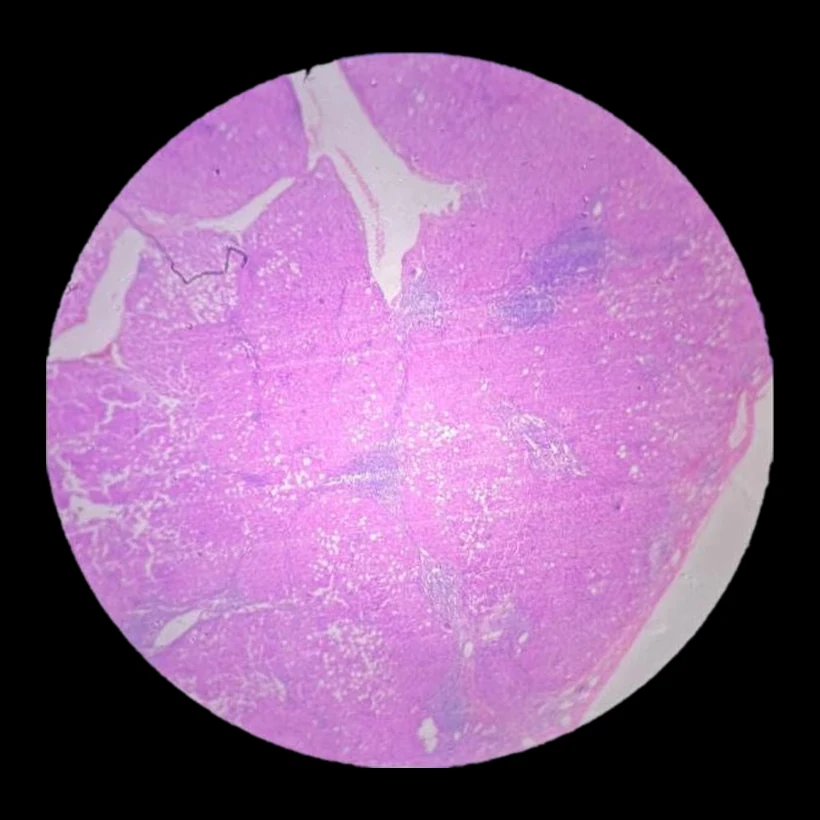

Lámina 01 · IMAGEN 1/4CASO 01 / 09

CASO 01 · Lámina 01
Órgano
Hígado
Proceso
Inflamación crónica
Descripción
- hepatocitos cargados de triglicéridos que desplazan su núcleo a la periferia
- fibrosis en su puente
- infiltrado inflamatorio linfocitario
- áreas de hemorragia
- angiogénesis
Diagnóstico
Cirrosis hepática